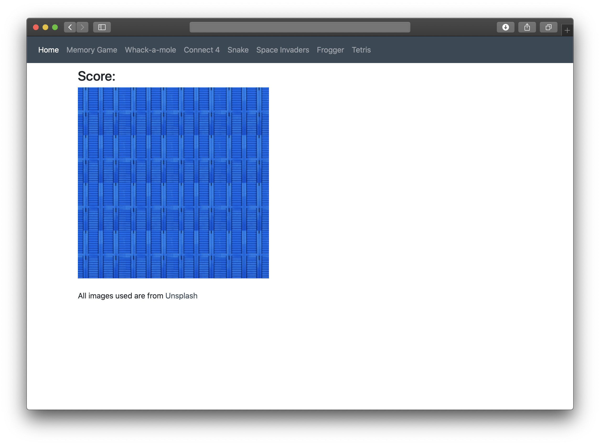
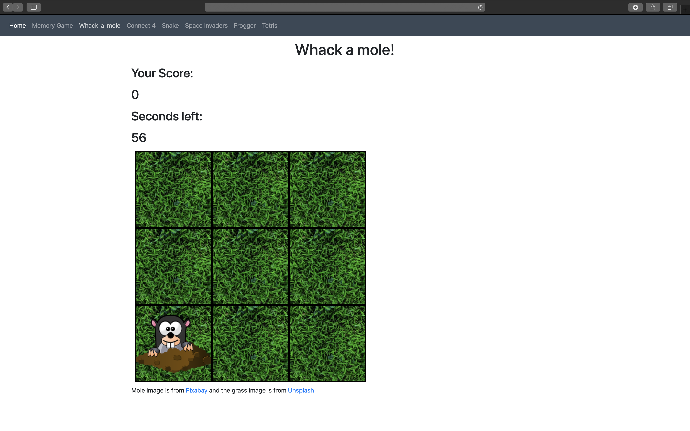
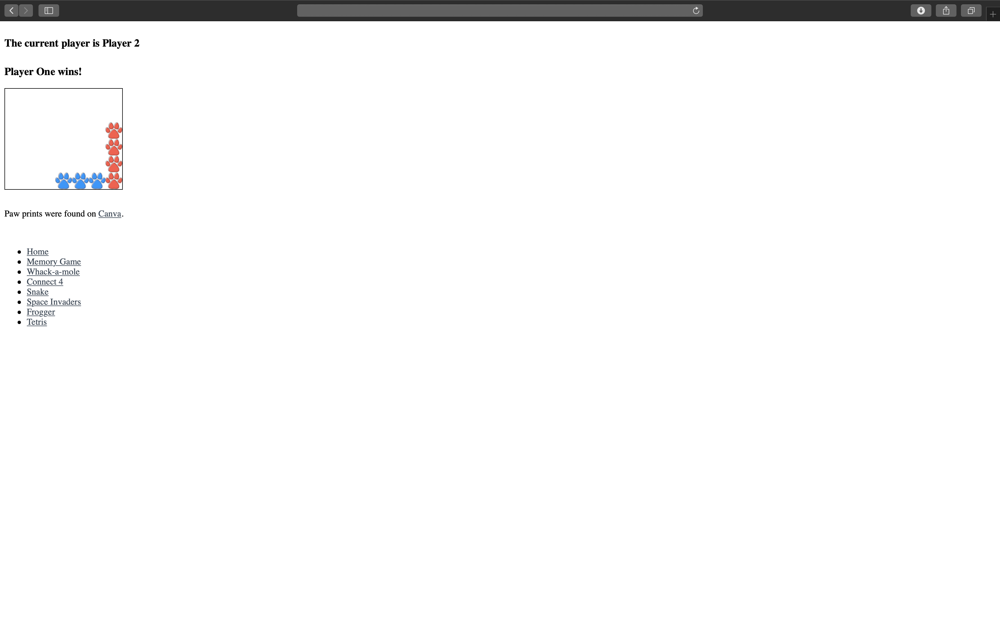

Recently, I found a YouTube video created by Ania Kubow for FreeCodeCamp. In the video, Learn JavaScript by Building 7 Games - Full Course, Ania teaches you how to use JavaScript by building seven different retro games.
On Day 1, I created the Memory Game. This took a little longer than expected, because I used a comma instead of a semicolon in an if statement... The images I used for this project are from Unsplash. 
On Day 2, I created the Whack a mole game. For this project, I decided to add a grass image to the squares. Then, I found on w3schools that you can use multiple background images. The images I used for this project are from Pixabay and Unsplash. 
On Day 3, I created the Connect Four game. Instead of simple colored circles, I decided to use different colored paw prints which I found on Canva. I had to create a simple list at the bottom of the page for site navigation. For some reason, the grid would not work properly when I included the CSS for Bootstrap. I'll work on fixing this later. 
Check out Ania Kubow's video below!